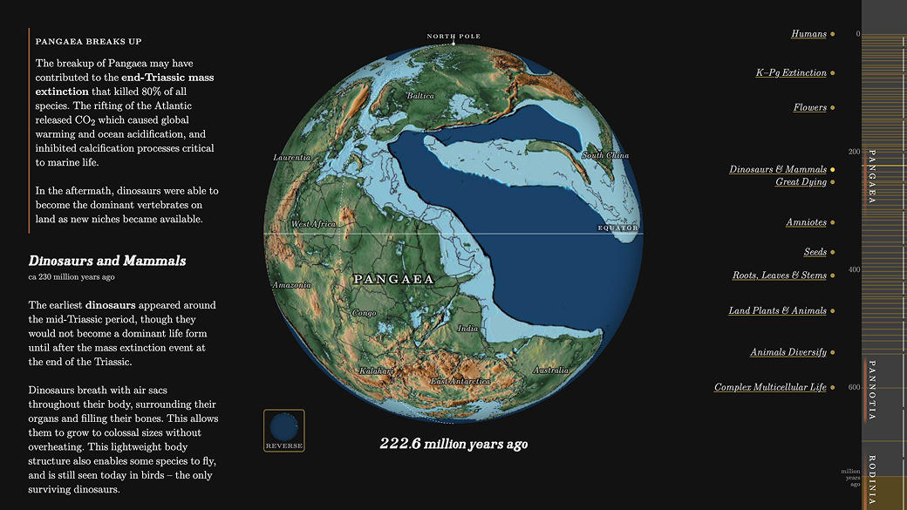
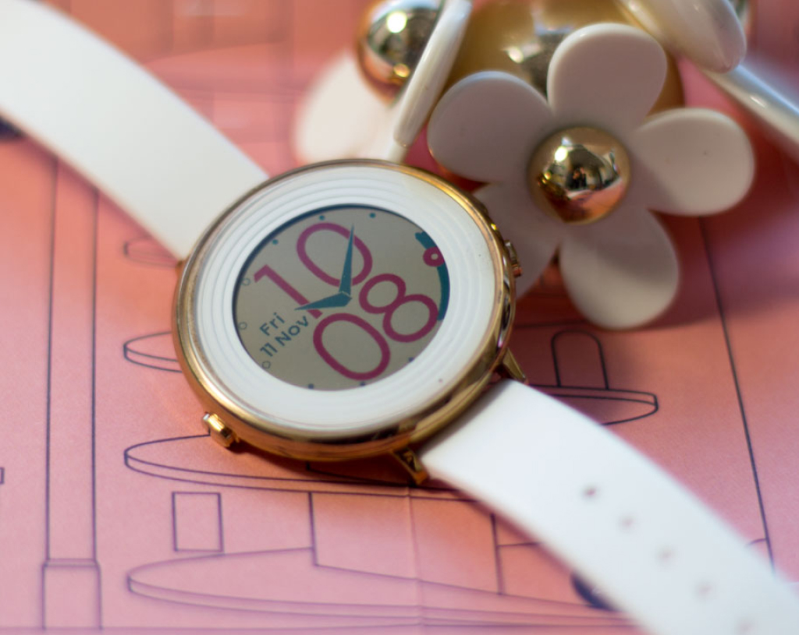

Designed for humans.
I design and make human-centric tools and interactive experiences for the web and beyond.
-
Life & Supercontinents
Web Tool An interactive timelapse of Earth’s supercontinents and evolutionary history
-
Gauge Geometry
Pebble Watchface An analog-digital Pebble watchface with temperature display, designed for legibility and simplicity
Useful tools
Things I’ve made that you may find useful. Source code provided.
My portfolio
Read about the process behind my personal and professional work.